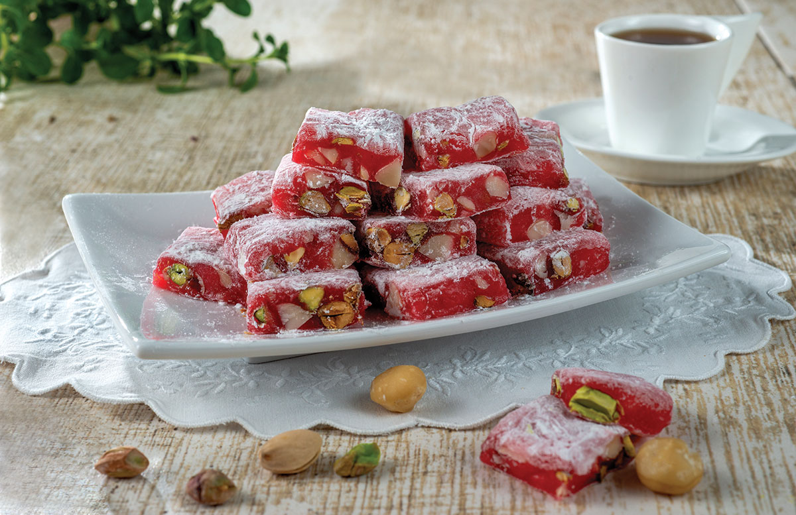
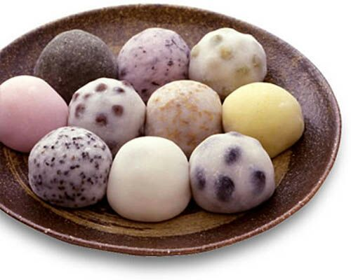

Ingredientes
- 180 g de Harina de trigo
- 100 g de Mantequilla fría
- 2 cs de Azúcar blanca
- 1 pizca de Sal
- 3 cs de Agua
- 350 g de Fresas
- 4 cc de Mermelada de fresa
- Azúcar glas
Elaboracion
- Echa en un cuenco la harina, el azúcar y la sal, mezcla y a continuación corta la mantequilla fría en dados e incorpórala.
- Mezcla con las yemas de los dedos como cuando haces la masa quebrada, no hay que amasar mucho.
- Agrega el agua para que sea más uniforme, tapa con film y deja que repose en la nevera 1 hora como mínimo
- Sacala masa del frigorífico y colócala entre dos hojas de papel vegetal (o teflón, silpat, film transparente…), estira con el rodillo dándole forma redonda y fina o de corazón.
- Pon papel en una bandeja de horno y coloca encima la masa.
- Lava, seca y corta las fresas en láminas gordas
- Extiende la mermelada por la masa y agrega las fresas.
- Dobla la masa hacia dentro de forma que tape un poco el relleno por los bordes.
- Introduce la galette en el horno precalentado a 200º C con calor arriba y abajo y hornea durante 25 minutos, o hasta que la masa esté dorada y crujiente.
- Saca del horno y espolvorea con azúcar glas antes de servir tu 'galette' de fresas.

Ingredientes
- 75 gramos de fécula de maíz
- 150 mililitros de agua
- 1 cucharada sopera de agua de azahar
- 2 gotas de colorante alimenticio rojo
Elaboracion
- Para empezar con la receta tradicional de las delicias turcas, primero prepara el molde para dejarlas enfriar.
- En un bol no muy grande añade los 75 g de fécula de maíz (maicena) con los 150 ml de agua
- En un cazo hierve los 300 g de azúcar glass junto con 125 ml de agua y el zumo de limón
- Si no tienes termómetro, no te preocupes, puedes hacerlo sin él. Tardará entre 20-30 minutos
- Una vez alcanzado el punto de bola blanda, remueve de nuevo la maicena con el agua y el colorante
- Retira del fuego y vierte en el molde de silicona que tenías reservado.
- Mezcla en un bol las 4 cucharadas de azúcar glass con las 2 cucharadas de fécula de maíz
- Espolvorea por encima con ayuda de un colador para que quede más fino, reserva el resto
- Pasadas las 24 horas de reposo, desmolda el bloque de delicias turcas, espolvorea si es necesario con un poco más de la mezcla de maicena y azúcar glass que tenías
- Reboza cada cubo obtenido en la mezcla de azúcar glass y maicena.
- Ya tienes lista la delicia turca. No las guardes en la nevera, mejor reserva en un bote hermético de cristal hasta tres semanas después de su elaboración

Ingredientes
- almidón de patata o maizena (para espolvorear)
- 160 g harina de arroz
- 225 mL agua
- 1 cucharada azúcar o edulcorante
Elaboracion
- Comienza mezclando bien la harina y el azúcar en un bol grande
- Ve añadiendo poco a poco el agua mientras remueves la masa. Tiene que quedar bien húmeda
- Tapa la mezcla con papel film, y calienta en el microondas durante 2 minutos a potencia elevada
- Sácalo del microondas y sigue removiendo bien
- Vuelve a cubrir el bol con papel film transparente y mete en el microondas otros dos minutos
- Usa un mortero, poniendo la masa en el para machacarlo poco a poco. Añade un poco de almidón de patata para evitar que la masa se pegue
- Sigue trabajando la masa con las manos, dándole vueltas y amasándola hasta lograr una textura de mochi perfecta
- Divide la masa en 12 o 13 partes del mismo tamaño, haciendo bolitas y aplanándolas para poner el relleno en el centro
- Trabaja la masa sobre una superficie espolvoreada con almidón de patata o maizena